Embedded Software
The code that lives inside the device: what an embedded operating system does, how software talks to hardware through registers, interrupts and timers, how it saves energy, and the C tricks every firmware developer uses.
Embedded software and operating systems
Embedded software
Software that lives close to the hardware
The program in your washing machine is not an app you install and update every week. It was written for that exact machine, knows its motor, valves and buttons, and stays the same for years.
That is embedded software. Because it sits between the fixed hardware and easily changed software, it is also called firmware: it is "firmer".
- Embedded software is software that runs on the processor of an embedded system.
- It is typically closer to the hardware than normal software: tied to particular hardware, built around hardware constraints and limitations (little RAM, little flash, a slow CPU, a battery), and busy controlling sensors, actuators and peripherals.
- It is also known as firmware: it does not change as easily or as frequently as software on general purpose computers.
- It is most commonly written in C, which gives direct access to memory and registers with very little overhead.
- The figure shows what one such chip contains. The CC2650 is a System-on-Chip: a main CPU (ARM Cortex-M3), memory, a radio, and a collection of peripherals (timers, UART, I²C, SPI, ADC, watchdog, RTC) that the firmware has to drive.
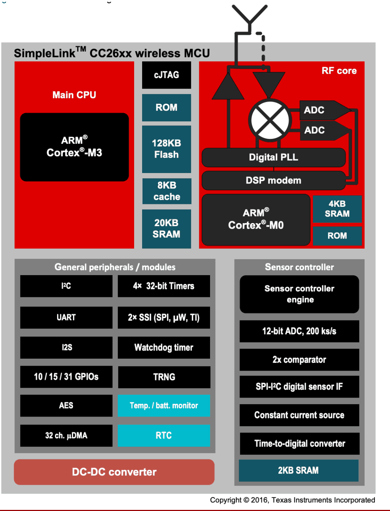
Stages of embedded software development
Write here, run there
You cannot open a code editor on a thermostat. So you write and build the program on a normal computer, then copy the result into the device, and only there can you see whether it works.
It is like writing a letter at your desk and posting it: the place where you write is not the place where it is read. If something is wrong, you go back to the desk.
- The development environment is not the execution environment. Development takes place on a normal computer.
- Source → Build: a cross-compiler on the computer produces an executable binary for the target CPU.
- Flash: the binary is installed on the embedded device. This is called programming or flashing the device.
- Test: debugging and testing take place on the embedded device itself, with its real peripherals and timing.
- Deploy: the device goes into the field. The arrows going back in the figure are the point: whenever a stage reveals a problem you return to the source and go around again.
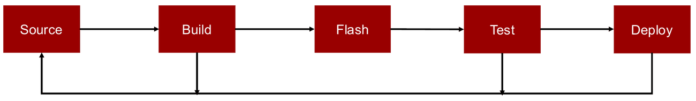
Embedded operating systems
Do you even need one?
An operating system is a building manager: it decides who uses which room when, and it hides the plumbing so tenants just turn a tap. Handy, but a manager costs money and space.
A tiny device can skip the manager and let the one tenant do everything himself (bare metal): nothing is wasted, but nothing is reusable either. An embedded OS is a very lean manager built for very small buildings.
- The operating system manages and abstracts hardware resources. In the figure it sits between the hardware and the programs.
- Traditional operating systems (Linux, Windows) are often not suitable for embedded systems: they assume megabytes of RAM, a memory management unit and plenty of power.
- Without an OS (bare metal): the application talks directly to the hardware. Maximum efficiency, but no flexibility.
- An embedded OS provides:
- hardware abstractions,
- APIs and drivers for common peripherals,
- intuitive programming models such as multithreading.
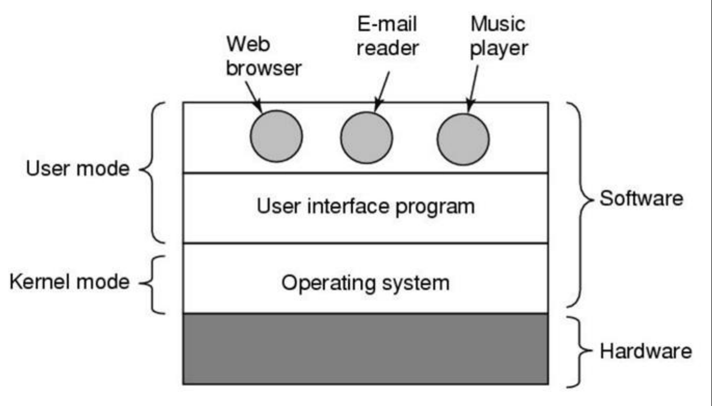
Requirements for an embedded OS
Small, portable, frugal, punctual, secure
Imagine packing for a month-long hike with a small backpack. Everything must be light, work in any terrain, sip rather than gulp your supplies, keep you on schedule, and not get stolen. An embedded OS has the same five worries.
- Small memory footprint: as low as kilobytes in some low-end embedded systems.
- Support for heterogeneous hardware: a large variety of architectures (8-bit, 16-bit, 32-bit), of available RAM and flash, and of network interfaces (wired, wireless).
- Energy efficiency: the OS must duty cycle the CPU, radio and peripherals, or provide an API so the application can.
- Real-time capabilities: timely execution is crucial for time-sensitive applications. An RTOS (Real-Time OS) is an OS that can guarantee worst-case execution times. Real-time means predictable, not fast.
- Security: confidentiality, authentication, data integrity, access control, and so on.
Modules of an embedded OS
Only compile what you need
A desktop OS is a furnished house: everything is already there, whether you use it or not. An embedded OS is a box of building blocks. You pick the blocks your product needs, and only those are built into the final program.
No Bluetooth in your product? Then not a single byte of Bluetooth code ends up in the device.
- Embedded operating systems are designed to be modular: kernel (scheduler, tasks, locks), device drivers, a low-power network stack, supporting libraries, and a hardware abstraction layer on top of the hardware.
- The application is compiled together with the OS into a single image. There is no separate "install the OS, then install the app".
- The developer decides which modules to include, through the build system (
make) and preprocessor statements (#ifdef). - The executable binary includes only the absolutely necessary code. Supporting code for other CPUs, drivers for peripherals that are not present and protocols that are not used are not included.
#ifdef WITH_COAP /* set by the build system */
coap_init(); /* compiled only if CoAP is selected */
#endif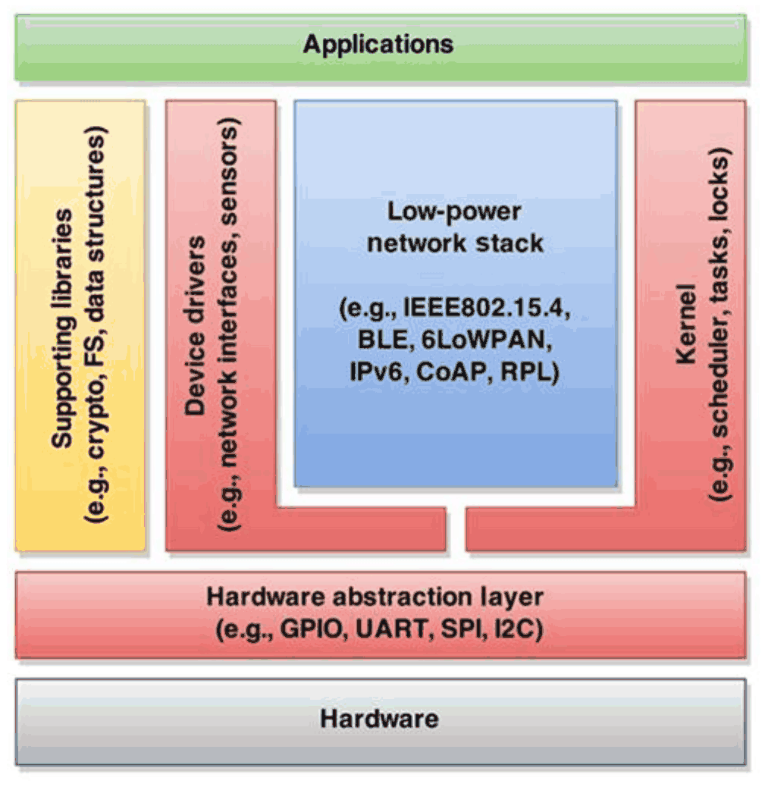
Event-driven, multi-threading and real-time operating systems
Three ways to organise the work
Event-driven is one receptionist handling whatever comes in, one thing at a time: phone rings, handle it; doorbell, handle it. Very cheap, but awkward for long jobs.
Multi-threading is several employees, each with their own desk, sharing one phone in turns. More natural to organise, but desks take space and handing over the phone takes time.
An RTOS is an emergency dispatch centre: every call is guaranteed to be answered within a fixed time, and strict rules make sure of it.
| Event-driven | Multi-threading | Real-time (RTOS) | |
|---|---|---|---|
| How it runs | All processing is triggered by an external event (from peripherals, or timer events scheduled by the CPU). Roughly an infinite loop that handles events. | Each thread runs in its own context and manages its own stack. The scheduler performs context switching. | Built so that real-time guarantees hold, in terms of worst-case execution time. |
| Memory | Everything (OS and apps) runs in the same context and address space, like one single program. | One stack per thread. | Depends on the design. |
| Strength | High efficiency in memory and processing. | More natural programming model; the traditional approach in modern OS (e.g. Linux). | Formal verification, certification and standardisation. |
| Weakness | Not all programs can easily be expressed as state machines. | Memory overhead and run-time overhead. | Strict constraints for developers; inflexible and difficult to port to new hardware. |
| Example | Contiki-NG | RIOT | FreeRTOS |
The skeleton of an event-driven system, where each handler must finish quickly and return:
while (1) {
event = next_event(); /* from a peripheral or a timer */
if (event == NONE) sleep();
else handle(event); /* runs to completion */
}Slides 11 to 13. The three categories are not mutually exclusive in practice: an RTOS usually also offers threads.
Scheduling and priorities
Who gets the CPU, and when
One CPU, several tasks: someone has to decide whose turn it is. That is the scheduler.
A preemptive scheduler is a strict chairperson who cuts speakers off when their time is up. A cooperative one lets everyone talk until they choose to stop: efficient, unless someone never stops. With priorities, the fire alarm always gets to speak before the small talk.
- The scheduler manages how the processor is shared among tasks: it decides when each task (process or thread) is executed.
- Preemptive scheduling: the scheduler can interrupt a running task to give the CPU to another. Fundamental for fairness in UI-based operating systems. Less efficient: more context switches, and the periodic timer prevents the system from going to sleep.
- Non-preemptive (cooperative) scheduling: each task executes until it voluntarily yields the CPU. More efficient, but vulnerable to errors: tasks must yield quickly or risk blocking important system functions.
- Tickless preemptive scheduling: preemption occurs on interrupts and when a task naturally blocks, not on a time basis. An efficient solution in the middle.
- Priority scheduling: every task has a priority level and the scheduler selects the task with the highest one. High priority tasks (typically system-level) always win over lower ones.
- The lowest priority can suffer from starvation in busy systems. That is rarely the case in embedded systems, which spend a lot of time idle or asleep.
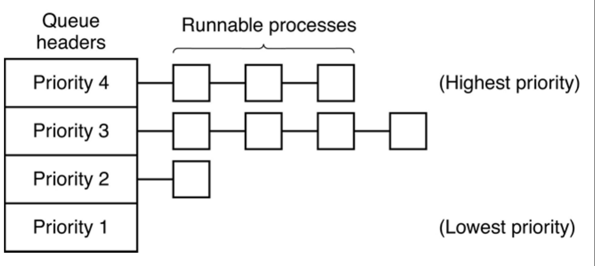
Multithreading and thread synchronisation
When two threads touch the same thing
Two people share a whiteboard with a tally. Both look at it ("5"), both walk away to add one in their head, both come back and write "6". Two visitors arrived, but the tally only went up by one.
That is a race condition. The fix is a rule: whoever holds the marker may use the board, everyone else waits. The marker is a mutex.
- Sources of parallelism: multicore CPUs; preemptive scheduling, which gives pseudo-parallel thread execution on one CPU; and the auxiliary processors and accelerators that embedded systems often incorporate (true parallelism).
- Parallelism creates the risk of race conditions on shared memory and shared peripherals: the result depends on the exact interleaving.
- In the figure,
counter++is really three steps (read, increase, write back). If both threads read before either writes, one increment is lost. - Thread synchronisation tools: the mutex (only one thread at a time inside the protected section) and the condition variable (a thread sleeps until another signals that a condition holds).
- Inter-Process Communication (IPC): messages. Instead of sharing memory, threads send each other data, which avoids the shared state altogether.
- The same problem exists between the main code and an interrupt handler. There the classic cure is to briefly disable interrupts around the critical section.
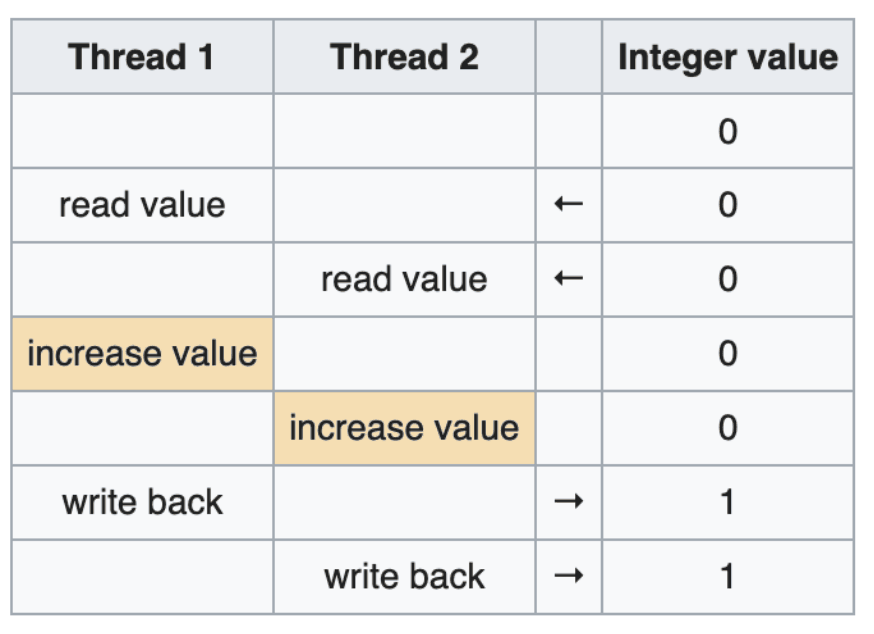
The embedded OS landscape, and how to choose
There is no single best OS
Choosing an embedded OS is like choosing a car. You do not ask "which is best?" but "does it fit my garage, can I get parts, is it certified for what I want to do, and can I get help when it breaks?"
- The two tables show how much the field varies: architecture (monolithic, microkernel, RTOS), scheduler (cooperative or preemptive), programming model (event-driven or multithreading), supported MCU families, RAM and flash needs, license and network stacks.
- Names you will meet: Contiki / Contiki-NG, TinyOS, RIOT, FreeRTOS, OpenWSN, Zephyr (the OS under the nRF Connect SDK used in the lab).
- Selection criteria:
- Features: supported hardware (platforms, CPUs, peripherals, accelerators), supported software (communication protocols, file system, encryption libraries), tools (simulator, debugging tools).
- Portability: vendor-based vs generic OS, open standards (POSIX).
- Certification: real-time guarantees, networking interoperability.
- License: proprietary, permissive, copyleft.
- Documentation, support, community.
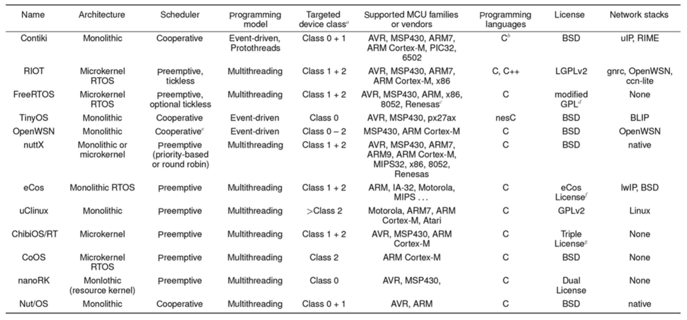
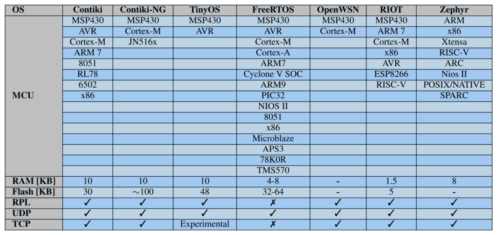
Talking to the hardware
Embedded programming: peripherals and registers
Hardware is controlled by writing numbers to addresses
Every peripheral has a small control panel made of registers. Some are indicator lamps you can only look at (status), some are buttons you can only press (command), and some are dials you can both read and turn (data and configuration).
Embedded programming is, to a large extent, reading lamps, pressing buttons and turning dials in the right order.
- Embedded programming typically involves communication with peripherals: internal ones inside the System-on-Chip (SoC), and external ones on the same board.
- A peripheral controller has a number of registers that the CPU reads and writes:
- Status registers (read-only): what state is the peripheral in?
- Command registers (write-only): do something now.
- Data / configuration registers (read/write): the data being moved and the settings.
- Internal registers are usually memory-mapped: each one has a fixed address, so reading or writing it looks like accessing a variable through a pointer.
/* a status register and a data register at fixed addresses (made-up numbers) */
#define UART_STATUS (*(volatile uint8_t *)0x40002000)
#define UART_DATA (*(volatile uint8_t *)0x40002004)
if (UART_STATUS & (0x1<<0)) /* bit 0: a byte has arrived */
byte = UART_DATA;- This is why bitwise operations matter (Part 3), and why fixed-point operations are used instead of floating point on CPUs without a floating-point unit.
- Static memory allocation is preferred: all memory is reserved at build time, so there is no heap to fragment or run out of while the device runs unattended.
Slide 20.
Events and interrupts
Let the hardware tap you on the shoulder
You are reading a book and the doorbell rings. You put in a bookmark, answer the door, come back and continue reading exactly where you stopped.
An interrupt is the doorbell: a peripheral signals that something happened, the CPU pauses what it was doing, runs a short piece of code for that event (the interrupt handler), and then resumes.
- Peripherals can be programmed to issue signals (interrupts) when specific events happen: a byte arrived, a timer reached its value, a conversion finished.
- GPIOs can detect changes on a line, which is how interrupts from external peripherals are captured (a sensor pulling its INT pin).
- The interrupt controller handles the interrupts of multiple devices.
- An Interrupt Request (IRQ) is then sent to the CPU. It interrupts normal execution and executes the specified interrupt handler.
- The sequence in the figure: (1) the device is finished, (2) the controller issues the interrupt, (3) the CPU acknowledges it.
- Handlers should be short: they run while the rest of the program is paused. A common pattern is to set a flag in the handler and do the real work later in the main code.
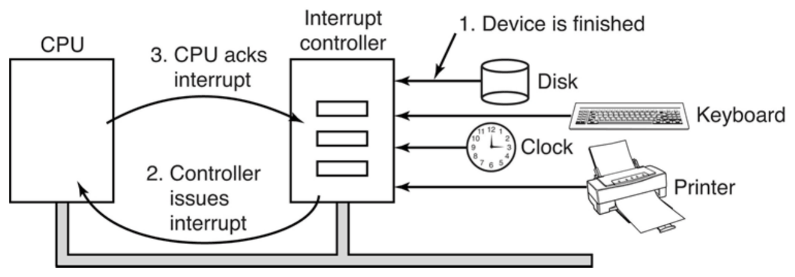
I/O software: busy waiting vs interrupt-driven
Staring at the kettle, or waiting for the whistle
Busy waiting is standing in front of the kettle asking "is it boiling yet?" a million times a second. It works, but you get nothing else done and you wear yourself out.
Interrupt-driven I/O is a kettle with a whistle: switch it on, take a nap, and let the whistle wake you.
Example: send a string to a peripheral (a printer), one character at a time.
With busy waiting: copy a character to the printer's data register, then read its status register in a while loop until the printer is done; repeat until the end.
for (i = 0; i < count; i++) { /* loop on every character */
while (*printer_status_reg != READY) ; /* loop until ready */
*printer_data_register = p[i]; /* output one character */
}- Disadvantages: it occupies the CPU doing nothing, wastes energy and heats up the system.
Interrupt-driven: enable and configure interrupts, copy the first character to the data register, and put the CPU to sleep. When the peripheral is done it issues an interrupt, the handler wakes the CPU, copies the next character, and so on until the end.
/* interrupt handler: runs each time the printer is ready again */
void printer_isr(void) {
if (i < count)
*printer_data_register = p[i++]; /* next character */
acknowledge_interrupt();
}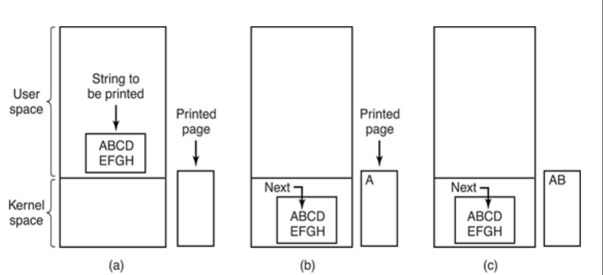
Timers
Counting ticks of an oscillator
A hardware timer is a car odometer driven by a metronome: every tick adds one. How fine you can measure depends on how fast the metronome ticks, and when the odometer runs out of digits it rolls over to zero.
To be woken at a certain moment you set an alarm mark on the odometer: "tell me when you reach this number."
- An SoC typically has a fixed number of hardware timers: high-frequency timers and low-frequency timers (RTC, real-time clock). The CC2650 has 2 HF timers and 1 RTC.
- A crystal oscillator provides the ticks; the counter register increments on each one (figure).
- Resolution depends on the frequency:
resolution = 1 / f 32 kHz: about 30.5 µs 24 MHz: about 41.7 ns
- A timer overflows periodically according to its size and frequency:
overflow period = 2bits / f 24-bit at 32 kHz: 512 s at 24 MHz: about 0.7 s
- Each hardware timer has to support multiple software timers. The counter increments at its frequency and wraps at the maximum value. A COMPARE value can be set so that a clock interrupt is issued when the counter reaches it, and software updates COMPARE to arm the next software timer.
- The trade-off between the two kinds: the HF timer is precise but overflows quickly and needs the power-hungry HF clock; the LF timer is coarse but runs for minutes and keeps going in sleep mode.
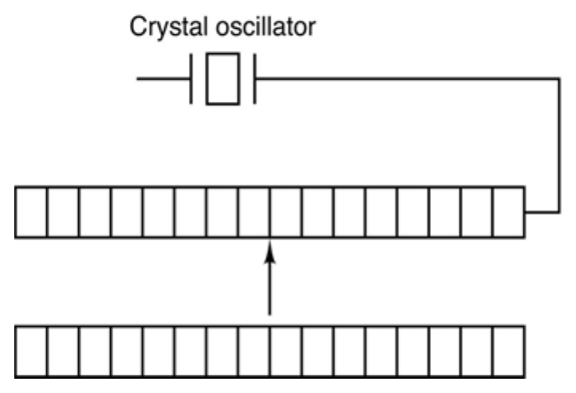
A timer challenge
Scheduling events near and beyond the overflow
Your kitchen timer only goes up to 8.5 minutes. Timing 5 minutes is easy. Timing 10 minutes is not.
Two ways out: set it for 5 minutes twice and ignore the first ring, or use a timer whose dial moves half as fast, so it reaches 17 minutes but with coarser marks.
Two oscillators (24 MHz and 32 kHz) drive two 24-bit timers. The LF timer overflows after 512 s, the HF timer after about 0.7 s.
An event in 5 minutes (300 s): use the LF timer.
- Read the current value of the timer (COUNTER).
- Calculate the ticks for the interval: INTERVAL = 300 × fLF = 9 830 400.
- Add them to the current value, wrapping around the timer's maximum:
COMPARE = (COUNTER + INTERVAL) mod 224
An event in 10 minutes (600 s): longer than the 512 s overflow period, so one compare is not enough.
- Approach 1, generate more events than needed: schedule an event every 300 s and ignore every odd one.
- Approach 2, trade resolution for overflow period: set PRESCALER = 1 to get a lower timer frequency (fLF = 16 384 Hz). Then INTERVAL = 600 × 16 384 = 9 830 400, which fits, and COMPARE is computed as before.
- On the nRF52832 RTC the tick frequency is
fRTC [kHz] = 32.768 / (PRESCALER + 1)and with the maximum prescaler the 24-bit counter takes 582.542 hours to overflow, at a resolution of 125 ms.
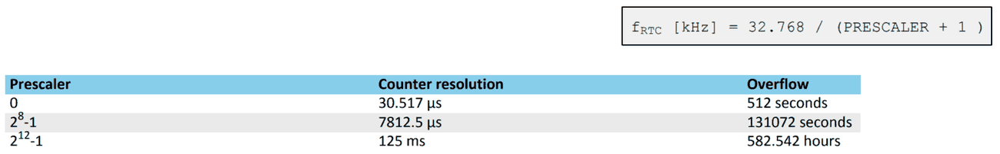
Watchdog timer
A dead man's switch for software
A train driver has to press a pedal every so often. If the driver faints and the pedal is not pressed, the train brakes by itself.
A watchdog is that pedal for firmware: the program must "kick" it regularly. If the program freezes, the kicks stop and the watchdog restarts the whole device. Nobody has to climb a mast to press reset.
- A safety mechanism against system crashes: a timer that resets the system when it expires.
- Under normal operation the system resets the timer periodically, making sure it never expires.
- If the system hangs (deadlock, infinite loop, and so on), the watchdog resets the system.
- It can be temporarily paused in long sleep modes or when the system is halted by a debugger, so that sleeping or stopping at a breakpoint is not mistaken for a crash.
- Where you kick matters: kick from the main loop, not from a timer interrupt, otherwise the interrupt keeps kicking happily while the main code is stuck.
while (1) {
do_work();
watchdog_kick(); /* "I am still alive" */
}Slide 28.
Direct Memory Access (DMA)
Moving data without the CPU
The manager does not carry every box from the truck to the warehouse. She tells a forklift driver "move these 500 boxes from there to here" and gets on with other things (or takes a nap). The driver reports back once, when the job is done.
DMA is that forklift: it copies data between memory and peripherals while the CPU does something else.
- DMA transfers data between the memory and peripherals without the involvement of the CPU.
- Support for multiple channels (several transfers set up at once).
- Transfer modes: memory-to-memory, memory-to-peripheral, peripheral-to-memory, peripheral-to-peripheral.
- The figure: (1) the CPU programs the DMA controller (address, count, control), (2) the DMA controller requests the transfer, (3) the data is transferred, (4) the device acknowledges. When the count reaches zero, the CPU gets an interrupt: one for the whole transfer, instead of one per byte.
- Slower but more energy efficient than the CPU. The CPU can stay asleep during the whole transfer, for example while an ADC fills a buffer with samples.
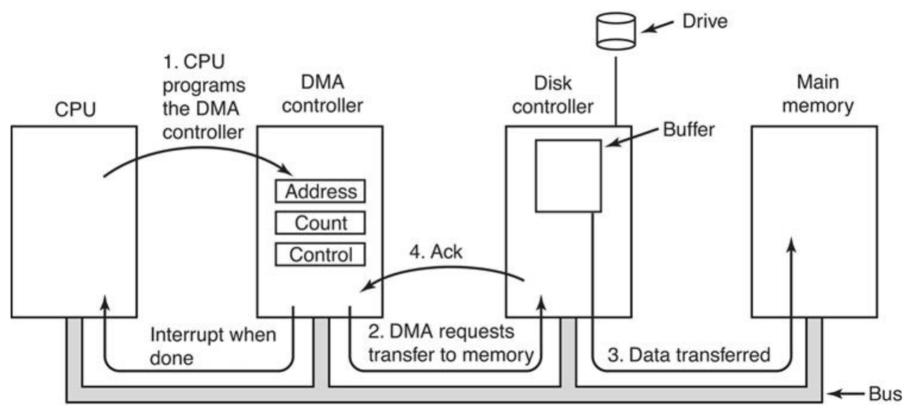
MCU power modes
Sleep as much as you can, as deeply as you can
Think of a shop. Active: open, staff serving. Idle: open, lights on, staff waiting. Sleep: closed for the night, only the alarm clock running, everything still on the shelves. Deep sleep: shut down and emptied; only someone knocking on the door can reopen it, and you start from scratch.
The deeper the sleep, the less it costs, and the less can wake you up.
MCUs provide granular control over which sub-modules are active: energy consumption vs functionality.
| Mode | CPU | RAM | HF clock | LF clock | Peripherals and wake-up |
|---|---|---|---|---|---|
| Active | on | on | on | on | internal peripherals active if needed |
| Idle | off | on | on | on | internal peripherals active if needed |
| Sleep (standby) | off | retained | off | on | peripherals unavailable; time-scheduled wake-up possible |
| Deep sleep (shutdown) | off | lost | off | off | peripherals unavailable; wake-up on pin edge possible |
- CC2650 numbers (slide 32): active 1.45 mA + 31 µA/MHz, idle 550 µA, standby about 1 to 2.7 µA, shutdown 150 nA. The radio adds about 6 mA while receiving or transmitting.
- From active to standby is a factor of more than a thousand. A node that is awake 0.1% of the time is dominated by what it draws while asleep.
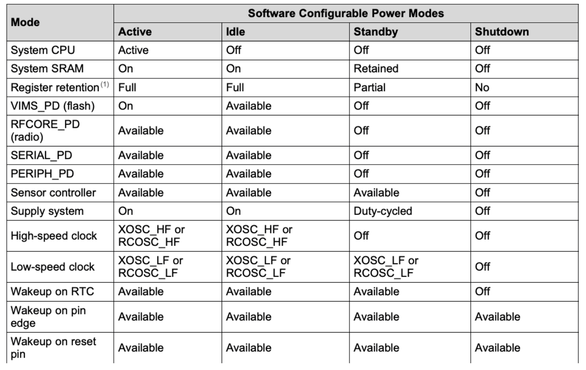
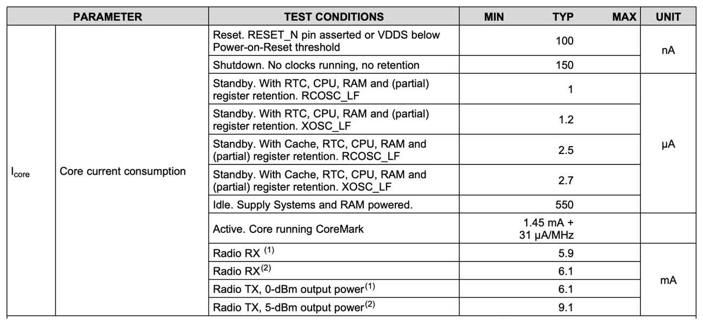
Embedded programming tricks in C
Numbers, data types, static and volatile
Say exactly what you mean
A recipe that says "a cup of flour" gives different cakes in different countries. "240 ml" does not. In C, int is the cup: its size depends on the machine. int16_t is the millilitres.
static is a drawer that keeps its contents between visits. volatile is a note to the compiler: "someone else changes this behind your back, so look at it again every time."
- Two's complement for signed numbers: to get a negative N-bit value, subtract from 2N.
8-bit: -100 = 256 - 100 = 156 = 0x9C
- Explicit and minimal data types. How big is an
int? On many embedded systems it is not 32 bits. Useint32_t,uint32_t,int16_t,uint16_tand friends (from<stdint.h>), and do not use auint32_twhen auint8_tis enough. - Static variables (
static uint8_t A;): the variable lives in a statically allocated piece of global memory, not on the stack, so it survives between function calls. - Volatile variables (
volatile uint8_t A;): tells the compiler the variable is expected to be changed by other entities (an interrupt handler, the hardware). The compiler does not keep it in a register or cache; it reads memory each time.
volatile uint8_t button_pressed = 0; /* written by the interrupt handler */
void button_isr(void) { button_pressed = 1; }
uint16_t count_calls(void) {
static uint16_t calls = 0; /* keeps its value between calls */
return ++calls;
}
while (!button_pressed) ; /* without volatile this may loop forever */Slide 33.
Inline functions and macros
Zero-cost abstractions, and their traps
Calling a function is like walking to a colleague's office to ask a question. For a tiny question the walk costs more than the answer. An inline function puts the answer on a sticky note at your own desk.
A macro is find-and-replace in a text editor. It is powerful and completely blind: it pastes text without understanding maths, which is how 1+1*10 happens.
- Inline functions omit the overhead of calling a function and speed up the execution of basic functions. They give you the speed of copy/pasted code without the maintenance problems of copy/pasting.
inline int sum(int a, int b) {
int result;
result = a + b;
return result;
}
c = sum(a, b); /* these two lines compile to the same thing */
c = a + b;- Macros, to avoid hardcoded numbers:
#define TICKS_IN_SECOND 32768 - Macros, to remove functionality you do not need at run time:
#ifdef FEATURE ... #endif - Use parentheses to avoid bugs:
#define ONE_PLUS_ONE 1+1 /* A = ONE_PLUS_ONE * 10 -> 1+1*10 = 11 */
#define ONE_PLUS_ONE (1+1) /* A = ONE_PLUS_ONE * 10 -> (1+1)*10 = 20 */
#define TIMES_TWO(x) x*2 /* A = TIMES_TWO(1+1) -> 1+1*2 = 3 */
#define TIMES_TWO(x) (x)*2 /* A = TIMES_TWO(1+1) -> (1+1)*2 = 4 */- For function-like macros, prefer inline functions: they are type-checked and have no such surprises.
Slides 34 and 35. The slide writes the function as inline sum (int a, int b); the return type int is added here.
Efficient math: shifts and fixed point
Arithmetic without a calculator on board
Multiplying by 10 in your head is easy: add a zero. Computers have the same trick for 2: slide the bits one place left and the number doubles; slide right and it halves.
And instead of decimals, count in smaller units. Nobody says "0.75 euros" at the till, they say "75 cents". That is fixed point: store 25.35 °C as the whole number 2535.
- Shift left by N to multiply by 2N:
A = A << 2is equivalent toA = A * 4. - Shift right by N to divide by 2N (the remainder is lost):
A = A >> 2is equivalent toA = A / 4. - Fixed-point instead of floating-point operations. Variable
Tis anint16that holds temperature in hundredths of a degree:T = 2535means 25.35 °C.T = T >> 1divides the temperature by 2, soT = 1267, that is 12.67 °C.
- Why bother: many small MCUs have no hardware multiplier, divider or floating-point unit. Floating point then has to be emulated in software, which is slow, costs energy and pulls a large library into the binary. A shift is a single cheap instruction.
Slide 36.
Bitwise operations on a specific bit
Set, clear, toggle, test
A register is a row of eight light switches, each controlling something different. You often need to flip one switch without bumping the others.
The tool is a mask: a stencil with a hole over exactly the switch you mean. OR through the hole turns it on, AND with the inverted stencil turns it off, XOR flips it.
Often you need to set, clear, toggle or read a specific bit within a byte (uint8_t A). In the figure, each bit of the ADXL362's INTMAP1 register switches one interrupt source on or off.
M = (0x1<<6); // mask on bit 6: 0b01000000 (shift moves 0x01 into place)
A = A | (0x1<<6); // set bit 6: OR with 1 sets, OR with 0 keeps
A = A ^ (0x1<<6); // toggle bit 6: XOR with 1 inverts, XOR with 0 keeps
A = A & ((0x1<<6) ^ 0xFF); // clear bit 6: AND with 0 clears, AND with 1 keeps
if (A & (0x1<<6)) { } // branch if bit 6 is set(0x1<<6) ^ 0xFFinverts the mask:0b10111111. You will usually see it written as~(0x1<<6), which does the same for a byte.- The short forms are
A |= M,A ^= MandA &= ~M. - Bits are numbered from 0 on the right (least significant) to 7 on the left.
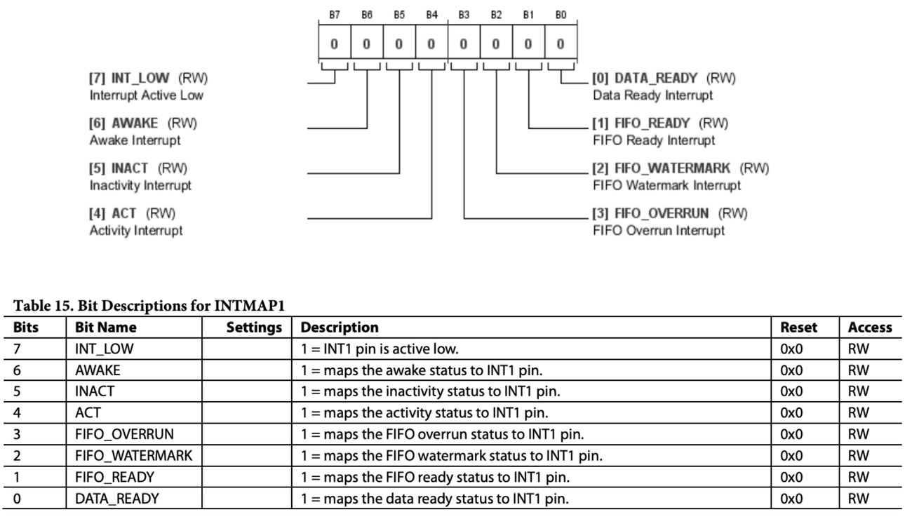
Bitwise operations on a set of bits
Reading and writing fields inside a byte
Sometimes a setting needs more than on/off, so it takes two or three neighbouring switches that together form a small number. To read it, slide it to the right edge and cover the rest. To change it, wipe just those switches clean and write the new number in, leaving the neighbours alone.
Often you need to read or write a set of bits within a byte (uint8_t FILTER_CTRL). In the ADXL362, FILTER_CTRL holds RANGE in bits 7:6 and ODR (output data rate) in bits 2:0.
// masks on the lowest bits
MASK3 = (0x1<<3)-1; // 0b00000111
MASK2 = (0x1<<2)-1; // 0b00000011
// read a set of bits
ODR = FILTER_CTRL & MASK3; // keep the first 3 bits, clear the rest
RANGE = (FILTER_CTRL>>6) & MASK2; // move the last 2 bits down by 6, then mask
// write a set of bits without corrupting the others:
// clear the field first, then OR in the new value
FILTER_CTRL = (FILTER_CTRL & (0xFF ^ MASK3)) | (new_odr & MASK3);
FILTER_CTRL = (FILTER_CTRL & (0xFF ^ (MASK2<<6))) | ((new_range & MASK2)<<6);- Pattern for a field of w bits starting at bit s: mask =
((0x1<<w)-1)<<s; read =(R>>s) & ((0x1<<w)-1). - Masking the new value (
new_odr & MASK3) protects the neighbouring fields if the value is too large for the field. - For a register in an external chip this becomes a read-modify-write: read the byte over SPI or I²C, change the field, write the byte back.
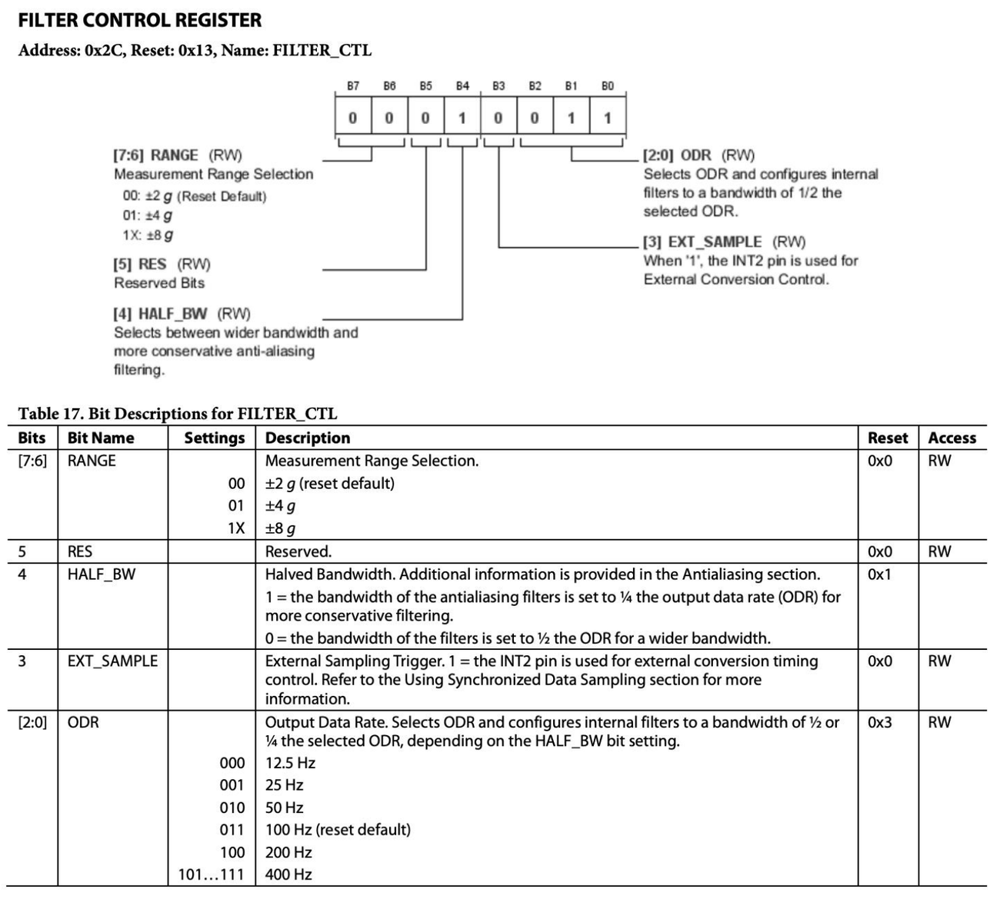
Programming and debugging the device
Programming (flashing) embedded systems
Getting the binary into the chip
The build gives you a file on your laptop. The chip cannot fetch it by itself, so a go-between is needed: a small helper chip that listens to your laptop over USB and writes the file into the target's memory.
Development boards have this helper built in, which is why you just plug in one USB cable.
- Programming or flashing the device: the build toolchain outputs a binary file that needs to be uploaded to the flash memory of the embedded system.
- This is done with a special programmer/debugger chip or board, which receives commands over USB or serial.
- Development boards often come with the programmer/debugger chip on board. On the CC2650 LaunchPad in the picture, the upper part of the board is the debugger and the lower part is the actual CC2650 system.
- Alternatively, the MCU's bootloader may be able to use the UART interface to receive firmware over serial. A bootloader is a small program that runs first after reset and can write a new image into flash.
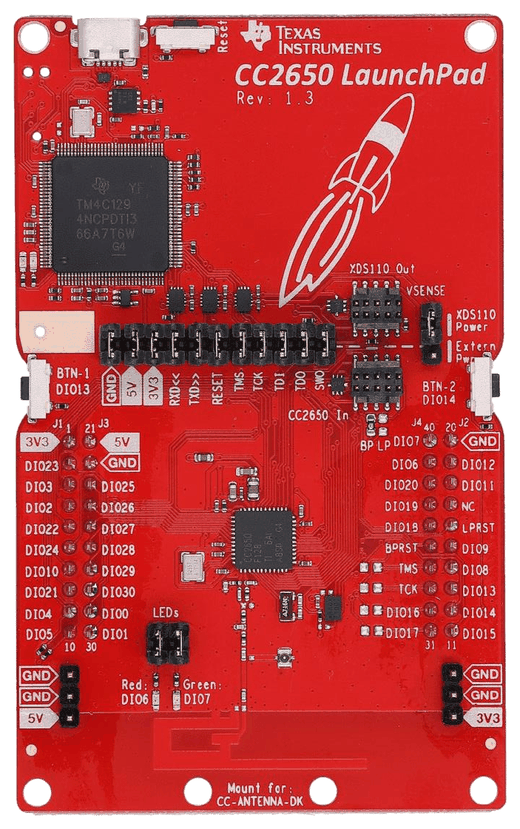
Programming and debugging interfaces
JTAG, cJTAG and SWD
The helper chip and the target need an agreed plug and language. There are three common ones. They all do the same two jobs (load the program, and let you look inside while it runs); they differ in how many wires they need and how several chips are hooked up together.
Programming/debugging standards are used for uploading binary code and as a debugger.
| Interface | Standard | Wires (+ optional RESET) | Several devices |
|---|---|---|---|
| JTAG (Joint Test Action Group) | generic, IEEE 1149.1 | 4: TCK, TMS, TDI, TDO | daisy chain |
| cJTAG | IEEE 1149.7 | 2: TMSC, TCKC | star topology |
| SWD (Serial Wire Debug) | specific to ARM processors | 2: SWDIO, SWCLK | star topology |
- In the pinouts: the CC2650 exposes
JTAG_TMSCandJTAG_TCKC(cJTAG); the nRF52832 exposesSWDIOandSWDCLK(SWD). - Fewer wires means fewer pins lost on a small package and a smaller connector on the board.
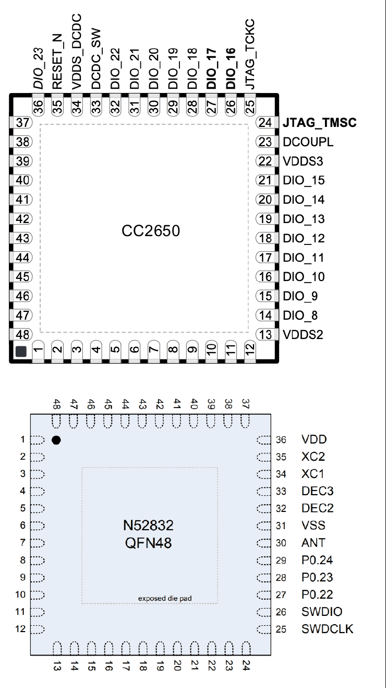
Debugging embedded software
Finding out what a device with no screen is doing
Your program runs inside a little black box with no screen and no keyboard. To find a bug you need a window into the box: freeze it and look inside (debugger), make it wink at you (LED), make it keep a diary (logs), or listen on its wires from outside (oscilloscope, logic analyser).
- Debuggers are powerful: breakpoints, reading the memory of the embedded system, and more. But breakpoints are not compatible with distributed software (the rest of the network keeps running while one node is frozen), and a debugger is not always available in the wild.
- LEDs as debugging tools: blink when entering or exiting a code region; turn on when entering an error state.
- Printing messages and logs: on serial if the UART is connected to a terminal; to a file in flash memory; or as log messages sent over wireless.
- Oscilloscopes, multimeters, logic analysers: test voltage levels and logic levels on the actual wires. A logic analyser records many digital lines at once and can decode protocols such as UART, SPI and I²C.
- Printing is not free: it takes time and can change the timing of the very bug you are chasing.
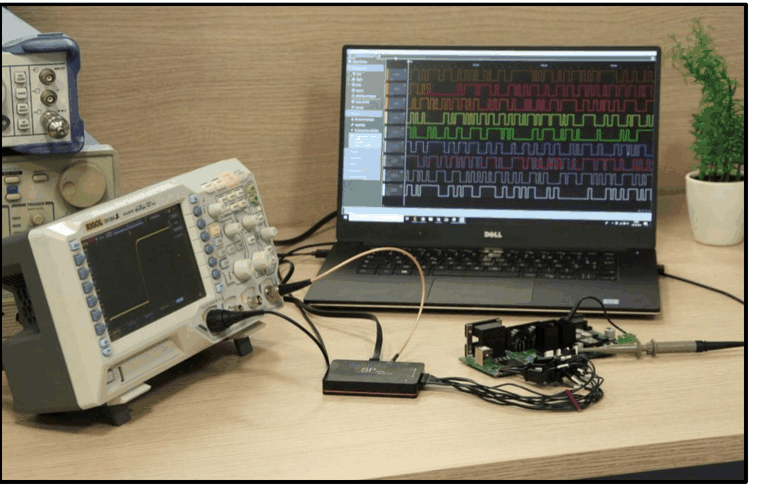
Cheat sheet
The formulas and one-liners worth memorising
Development stages
Build on a computer, run and test on the device.
OS models
Cheap | natural but with overhead | guaranteed worst-case timing.
Scheduling
Fair but costly | efficient but fragile | the efficient middle.
Register types
Peripherals are controlled by reading and writing registers.
Timer resolution and overflow
24-bit at 32 768 Hz: 30.5 µs and 512 s.
Scheduling a timer event
Too long? Count several events, or use a prescaler: f / (PRESCALER + 1).
Power modes
Sleep keeps RAM and the LF clock (timed wake-up). Deep sleep keeps neither (pin wake-up).
Two's complement
Use explicit types: int16_t, uint8_t. volatile for anything an interrupt changes.
Shifts and fixed point
Store 25.35 °C as 2535. The remainder of a right shift is lost.
Single bit n
Test: if (A & (1<<n)).
Bit field (width w, start s)
Write: clear the field with the inverted mask, then OR in (value & mask)<<s.
Macros
Always parenthesise. Prefer inline functions for function-like macros.
Debug interfaces
JTAG daisy-chains devices; cJTAG and SWD use a star.
Safety net
Recovers from deadlocks and infinite loops without human help.
Figures cropped from the lecture slides "Week 3: Embedded Software" by Xenofon Fafoutis and Massimo Pavan, DTU Compute, with their original sources noted. For personal study.